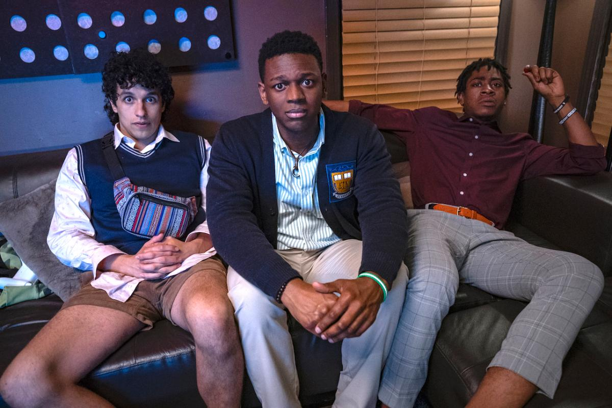

Una estudiante de secundaria y animadora entra en coma antes de su baile de graduación. Veinte años después, cuando se despierta, quiere volver al instituto para recuperar
su popularidad y convertirse en la reina del baile de graduación.
La trama sigue la historia de Stephanie Conway, una animadora de escuela secundaria que entró en coma antes de su baile de gra
duación. 20 años después, se ha despertado y quiere regresar a su escuela secundaria
para recuperar su estatus, convertirse en reina del baile y obtener su diploma. Fecha de estreno inicial:13 de mayo de 2022 Director: Alex Hardcastle Guion:Andrew Knauer,Arthur Pielli,Brandon Scott Jones
Metal Lords
Para los inadaptados adolescentes Hunter y Kevin, el
camino hacia la gloria es claro: dedicarse al metal, ganar
la Batalla de las Bandas y ser adorados como dioses. Fecha de estreno inicial:8 de abril de 2022 Guion: D. B. Weiss Director:Peter Sollett Música compuesta por:Tom Morello, Ramin Djawadi Productores: D. B. Weiss, Greg Shapiro Productores ejecutivos:D. B. Weiss, David Benioff, Bernadette Caulfield, Robin Fisichella
Incompatibles 2
Después de diez años, dos policías incompatibles deben investigar un asesinato
en un pequeño pueblo de Francia, donde se sucede una gran
conspiración.Incompatibles 2 (en francés, Loin du périph) es una película de comedia de acción policial y
buddy film francesa dirigida por Louis Leterrier y escrita por Stéphane Kazandjian. Es una secuela de
la película de 2012 Incompatibles (en su idioma original, De l'autre côté du périph) y está
protagonizada por Omar Sy y Laurent Lafitte (repitiendo sus papeles de la película anterior),
con Izïa Higelin. La película se estrenó el 6 de mayo de 2022 en Netflix. Fecha de estreno inicial: 6 de mayo de 2022 Director: Louis Leterrier Guion:Stéphane Kazandjian Música compuesta por:Guillaume Roussel Editor:Vincent Tabaillon Productores:Eric Altmayer, Nicolas Altmayer
Más barato por docena
La película original de Disney+ Más barato por docena, una nueva versión de la exitosa comedia de 2003, protagonizada por Gabrielle Union y Zach Braff, se estrena el 18 de marzo de 2022 exclusivamente en Disney+.
La pelìcula aborda la historia y los disparatados enredos de una familia compuesta de 12 integrantes, los Baker, que atraviesan la agitada vida hogareña y al mismo tiempo se ocupan del negocio familiar.
Sin duda, lo primero que me vino a la mente fue compararla con la versión de 2003 protagonizada por Steve Martin y Bonnie Hunt, y dirigida por Shawn Levy (sí, el mismo de Free Guy) pero, ¡sorpresa!, esta no podía ser más diferente.
Zach Braff y Gabrielle Union han tenido grandes momentos cómicos en sus carreras, Más ba
rato por docena no es uno de ellos. No me malentiendan: la película tiene algunos buenos
chistes y situaciones graciosas, pero la mayor parte del tiempo no hay química entre los
protagonistas ¡y mucho menos entre el resto de la familia!. Fecha de estreno: 16 de marzo de 2022 (Los Ángeles) Directora: Gail Lerner Música compuesta por: John Paesano Diseño de producción: Desma Murphy Guion: Kenya Barris, Jenifer Rice-Genzuk Henry Productores: Kenya Barris, Shawn Levy
Emergencia

Jordan, una veterana operadora de un centro telefónico de emergencias,
salva vidas diariamente como parte de su trabajo, pero cuando el reporte de una mujer termina trágicamente,
la operadora se siente devastada. Ella decide estar en la línea
frontal y enseñar a sus compañeros a trabajar bajo presión. Sin embargo,
cuando entra una llamada sobre una joven secuestrada, Jordan se hace cargo y trabajan juntas para poder salvar su vida. Fecha de estreno: 15 de marzo de 2013 (Estados Unidos) Director: Brad Anderson Recaudación: 68.6 millones USD Nominaciones: NAACP Image Award a la Mejor Actriz en una Película, MÁS Historia de: Richard D'Ovidio, Jon Bokenkamp, Nicole D'Ovidio Productores: Bradley Gallo, Jeffrey Graup, Michael Luisi, Robert Stein, Michael Helfant